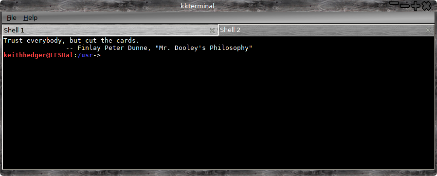
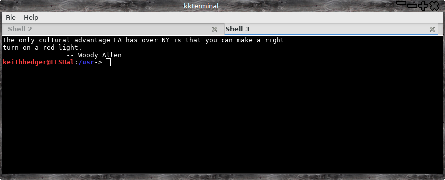
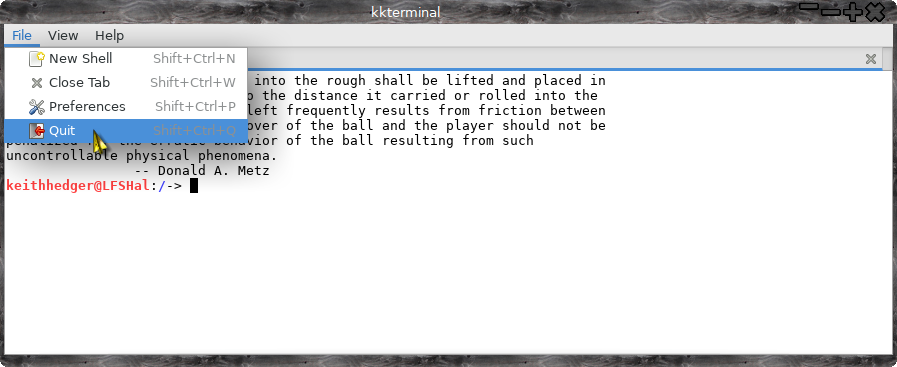
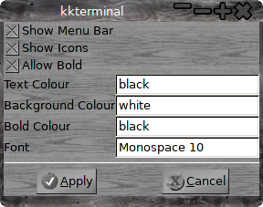

KKTerminal
Why another terminal emulator? Simple all
the others had too many dependencies, or too many bells and whistles or
just weren't quite right so I made this simple low resource emulator, it
can be built for either gtk2 or gtk3 ( I prefer gtk2 ).
Why 'KKTerminal', just because it fits with my editor
KKEdit.
Although written on Linux From Scratch, it has been quickly tested on *buntu, xfce4.
Dependenceis are small, just gtk2/3 and libvte to match, if your distros
split the dev files from the main package you will have to install
them.
Gtk2 version.

Gtk3 version.

Gtk3 version with menu icons.

Prefs.

As you can see not a lot of difference between the two, preferences are
set via a text file '~/.KKTerminal/kkterminal.rc', here you can
set background/foreground colour, font and font size, and position/size,
the position and size will however be overwritten on exit, a GUI to set
the prefs is on it's way.
There is a manpage installed, and you can right click on a terminal window to pop up a context menu.
Bells and whistles are limited at the moment but watch this space!
Usage:
Open new instance of kkterminal in '/usr. and list:
kkterminal -m -e ls /
Open ~ and / in new tabs in running copy of kkterminal:
kkterminal ~ /
Open new instance of kketeminal at pos 100,200 with width=800 and height=400:
kkterminal -m -x 100 -y 200 -w 800 -g 400
Default is to use a single instance but multiple instances can be opened with the '-m' switch.
See the manpage for more details.
At the moment the source is
only available on github as the project is quite new ( but usable! ) and is liable to rapid change.
Get it here:
KKTerminal
Building
Dependencies:
All:
X11 and dev files.
Gtk2:
gtk+-2.0 >= 2.24.0 and dev files
vte >= 0.28.2 and dev files
Gtk3:
gtk+-3.0 >= 3.10.0 and dev files
And either:
vte-2.90 >= 0.29.1 and dev files
Or:
vte-2.91 >= 0.40.0 and dev files
To build the Gtk2 version just use the standard:
./configure --prefix=/usr
make
sudo make install
To build the Gtk3 version use:
./configure --prefix=/usr --enable-gtk3
make
sudo make install
Back To Top
Back To Applications
{kind=link}
{kind=link}